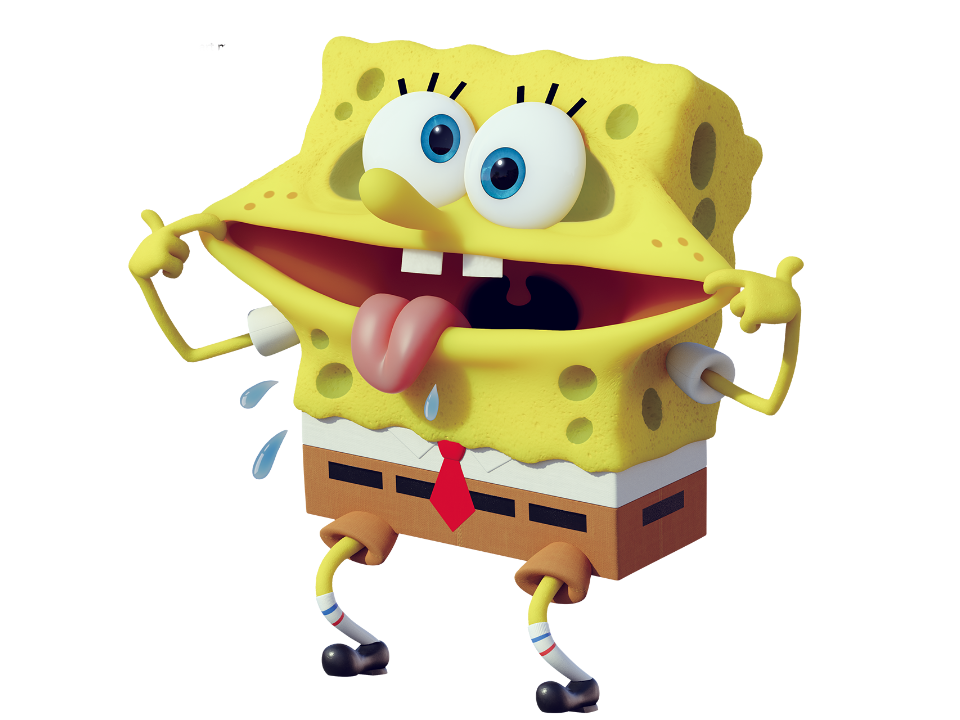
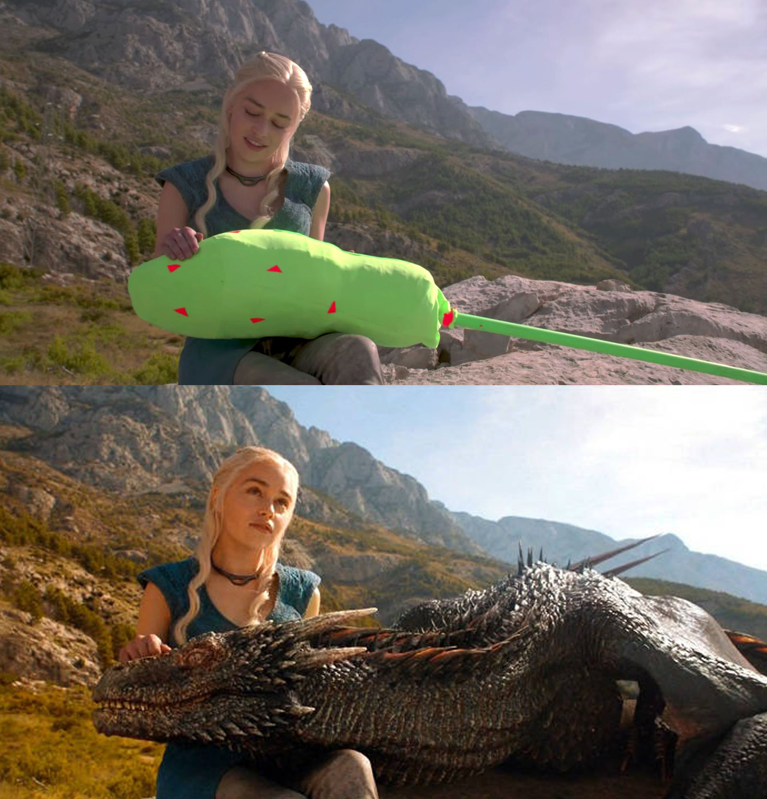
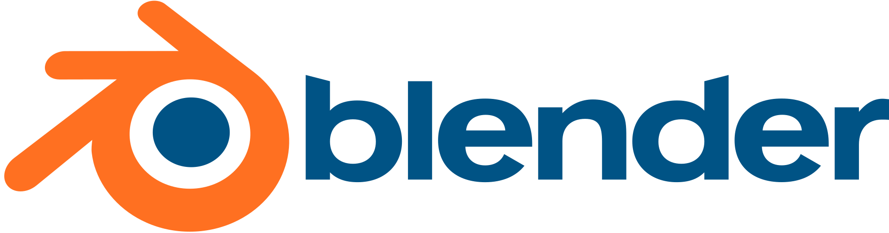
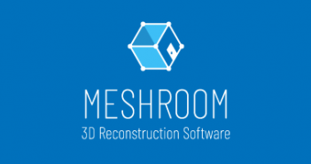

DevOps
The Web
Categorie
Multimedia
Profiel Content Creator
tooling Animatie - CGI
 De term 'CGI-animatie' verwijst naar dynamische CGI die wordt weergegeven als een film. De term virtuele wereld verwijst naar interactieve omgevingen. Computer grafische software wordt gebruikt om computer-gegenereerde beelden voor films, enz. Te maken. Beschikbaarheid van CGI-software en verhoogde computersnelheden hebben individuele kunstenaars en kleine bedrijven in staat gesteld om professionele films, games en beeldende kunst te produceren vanaf hun thuiscomputer. Dit heeft een internetsubcultuur tot stand gebracht met zijn eigen set van wereldberoemdheden, clichés en technische vocabulaire. De evolutie van CGI leidde tot de opkomst van virtuele cinematografie in de jaren negentig, waar runs van de gesimuleerde camera niet worden beperkt door de natuurwetten
CGI overzicht

→ Statische afbeeldingen en landschappen
→ Architecturale scènes
→ Anatomische modellen
→ Afbeeldingen van stoffen en huid genereren
→ Interactieve simulatie en visualisatie
→ Computeranimatie
→ Virtuele werelden
- Tooling voor animatie
-
Alternatieve niét FOSS tooling is Adobe After Effects geschikt voor MS Windows en macOS (betaald), Apple Motion geschikt voor macOS (betaald), Fusion geschikt voor MS Windows, macOS en Linux (betaald). Wél FOSS zijn:
Blender
 Blender is voor het maken van 3D-computergraphics en computeranimaties. Het programma is beschikbaar voor verschillende besturingssystemen.
→ zie: Wikipedia Blender
→ zie: Website Blender tbv downloadBlender heeft onder meer
→ Verschillende mogelijkheden voor modelleren, zoals: polygon meshes, NURBS, metaballs, en vectorfonts
→ Lezen en schrijven van verschillende 3D-bestandsformaten, zoals die van Wings 3D, 3D Studio, LightWave, etc.
→ Maken van animaties, met: inverse kinematics, skeletal- en lattice-vervormingen, keyframes, niet-lineaire animatie constraints, vertex weighting en statische of dynamische deeltjes die rekening met de voorwerpen houden
→ Maken van games, dit is wel basic maar kan worden uitgebreid met Python
→ Geïntegreerde, niet-lineaire videobewerker. Hierin kan men videoclips mengen met geluid en effecten toevoegen
Dankzij de functie "Camera Tracking", waarbij men de beweging van de echte camera nabootst met de Blender-Camera door middel van een algoritme, kan men ook gemakkelijk 3D-content mengen met echte beelden. Deze digitale toevoegingen worden ook wel VFX (Visual Effects) genoemd
Meerdere functies hiervoor werden toegevoegd, uitvoerig getest en verbeterd tijdens het "Mango Open Movie Project", waarbij men enkel Blender en andere OpenSource-software gebruikte om een korte film te maken en van speciale effecten te voorzien.
→ zie: YouTube Videotorial BlenderMeshroom
 Fotogrammetrie houdt zich bezig met de interpretatie en het opmeten van beeldmateriaal bij het bepalen en beschrijven van de vorm en afmeting en ligging van objecten.
→ zie: Wikipedia FotogrammetrieEen tool voor fotogrammetrie is Meshroom (Windows en macOS): waarmee een reeks “gewone” foto’s van een object of scene, eventueel gemaakt met smartphone, omgezet kan worden naar een digitale 3D presentatie. In navolgende GitHub verwijzing staat alle documentatie benodigd voor er mee werken.
→ zie: GitHub MeshroomMet Meshroom kan de 3D presententie bijgewerkt en opgeleukt worden tot een realistisch al dan niet natuurgetrouw model welke alsdan kan dienen om te incorpereren als een element in een project bij tool Blender (of Adobe After Effects etc). Bij de terrestrische fotogrammetrie wordt het beeldmateriaal vanaf een vast standpunt op het aardoppervlak gemaakt. Meshroom stelt gebruiker in staat om aan de hand van foto(‘s) een vast standpunt van de camera te bepalen, en daarvanuit een 3D visie van object te presenteren inclusief reverse engeneering van geometrische lijnen en afstanden. Gebruik van Meshroom vergt veel performance en kan op krachtige computer of laptop met dedicated grafische kaart van NVDIA. Een lijst van grafische kaarten die worden ondersteund staat in de documentatie.
→ zie: YouTube Videotorial Meshroom